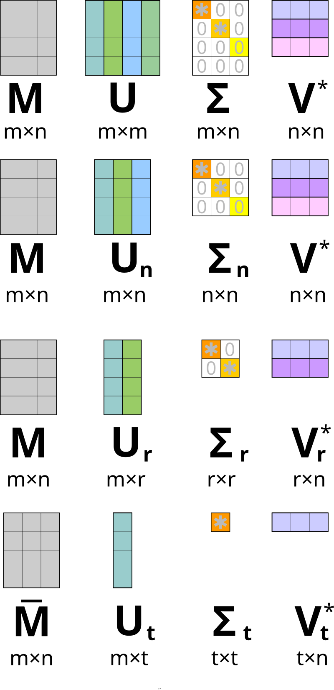
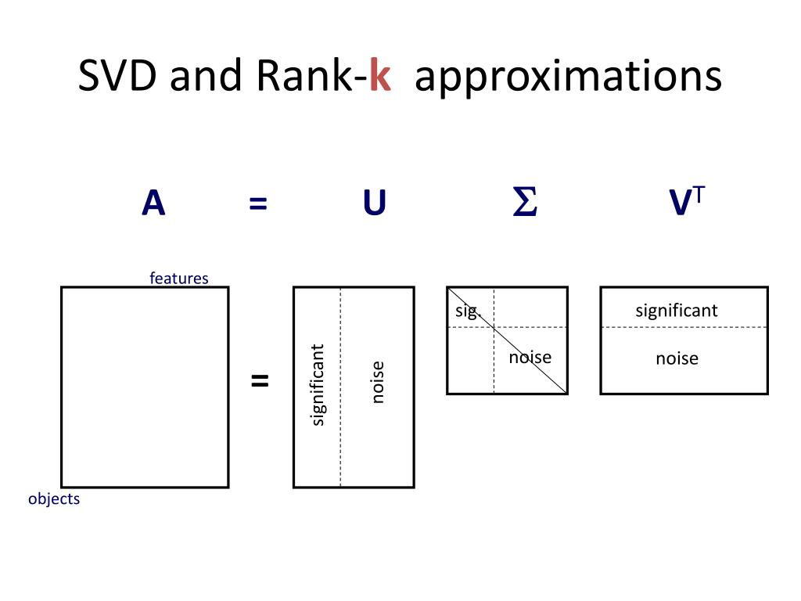
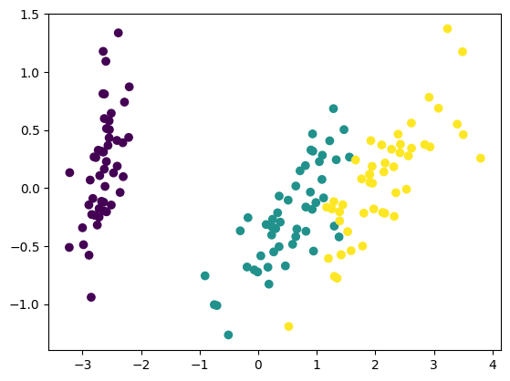

Matrix A:
[[1 2]
[3 4]]
Eigenvalues of A: [-0.37228132 5.37228132]In this chapter we will look at singular value decomposition (SVD), which is a variant of Jordan decomposition that you can apply to matrices that are not necessarily square. We will then look at how we can apply SVD to data science problems. This will also be an excellent opportunity to recall some linear algebra that we will need later on.
First, let’s recall what a matrix and its eigenvalues are.
Matrices are tables that contain numbers. Here are some examples of matrices: \[ \begin{pmatrix} 1 & 2\\ 3 & 4 \end{pmatrix}, \ \begin{pmatrix} 3/2 & 1/3 & 5\\ 2 & 1/9 & 6/5 \end{pmatrix}, \ \begin{pmatrix} \pi \\ e \\ \frac{1+\sqrt{5}}{2} \end{pmatrix} \]
When we say that \(A\) is an \(n \times m\) matrix we mean that \(A\) has \(n\) rows and \(m\) columns. It is also commonly written \(A = (a_{ij})\) to denote that the matrix \(A\) has the entry \(a_{ij}\) in the \(i\)-th row and \(j\)-th column.
In this course all matrices will have real entries. Although the material that we will cover today can easily be generalized to matrices that have complex entries.
Matrices have standard arithmetic operations defined on them. Matrix addition and multiplication by scalar are defined component wise. For example: \[ \begin{pmatrix} 1 & 2\\ 3 & 4 \end{pmatrix} + \begin{pmatrix} 5 & 6\\ 7 & 8 \end{pmatrix} = \begin{pmatrix} 1 + 5 & 2 + 6\\ 3 + 7 & 4 + 8 \end{pmatrix}, \] \[ 2\begin{pmatrix} 1 & 2\\ 3 & 4 \end{pmatrix} = \begin{pmatrix} 2*1 & 2*2\\ 2*3 & 2*4 \end{pmatrix}. \]
If \(A=(a_{ij})\) is an \(n \times m\) matrix and \(B=(b_{ij})\) is an \(m \times l\) matrix, then their multiplication \(AB=C\) is defined, where \(C=(c_{ij})\) is a \(n \times l\) matrix whose coeficients are given by \[ c_{ij} = \sum_{k=1}^m a_{ik}b_{kj}. \]
For example: \[\begin{equation*} \begin{split} &\begin{pmatrix} 1 & 2\\ 3 & 4 \end{pmatrix} \begin{pmatrix} 5 & 6 & 7\\ 8 & 9 & 10 \end{pmatrix} = \\ &\begin{pmatrix} 1*5+2*8 & 1*6+2*9 & 1*7 + 2*10\\ 3*5+4*8 & 3*6+4*9 & 3*7 + 4*10 \end{pmatrix} \end{split} \end{equation*}\]
Matrix multiplication is not commutative! That is, if both \(AB\) and \(BA\) are defined, then, in general, \(AB \ne BA\) (of course there are matrices that do commute).
For example, \[ \begin{pmatrix} 1 & 0 & 0 \\ 0 & 0 & -1 \\ 0 & 1 & 0 \end{pmatrix} \begin{pmatrix} 0 & 0 & 1 \\ 0 & 1 & 0 \\ -1 & 0 & 0 \end{pmatrix} = \begin{pmatrix} 0 & 0 & 1 \\ 1 & 0 & 0 \\ 0 & 1 & 0 \end{pmatrix}, \] but \[ \begin{pmatrix} 0 & 0 & 1 \\ 0 & 1 & 0 \\ -1 & 0 & 0 \end{pmatrix} \begin{pmatrix} 1 & 0 & 0 \\ 0 & 0 & -1 \\ 0 & 1 & 0 \end{pmatrix} = \begin{pmatrix} 0 & 1 & 0 \\ 0 & 0 & -1 \\ -1 & 0 & 0 \end{pmatrix}. \]
A matrix is called square if it has the same number of rows and columns.
Suppose \(A\) is a \(n \times n\) square matrix. If there exists a \(n \times n\) square matrix \(B\) such that \(AB=BA=I,\) then \(B\) is called the inverse of \(A\) and is denoted by \(A^{-1}\).
Here \(I\) is the unit matrix, i.e. a matrix whose only non-zero entries are ones on the diagonal: \[ I = \begin{pmatrix} 1 & 0 & 0 & \cdots & 0 \\ 0 & 1 & 0 & \cdots & 0 \\ 0 & 0 & 1 & \cdots & 0 \\ \vdots & \vdots & \vdots & \ddots & \vdots \\ 0 & 0 & 0 & \cdots & 1 \end{pmatrix} \]
Note that \((A^{-1})^{-1} = A\) and \((AB)^{-1}=B^{-1}A^{-1}.\)
A matrix has an inverse if and only if the determinant of \(A\) is non-zero.
The determinant \(\det\) is a function which to each square matrix associates a number.
There is a general formula for the determinant of \(n \times n\) matrix but it is rather clunky so the determinant is usually defined inductively as follows.
First of all a \(1 \times 1\) matrix \(A\) has only one entry \(a_{11}\), so \(\det(A)=a_{11}\).
Then for a \(2 \times 2\) matrix we have the formula \[ \det \begin{pmatrix} a_{11} & a_{12}\\ a_{21} & a_{22} \end{pmatrix} = a_{11}a_{22}-a_{12}a_{21} \].
For a \(3 \times 3\) matrix we have \[\begin{equation*} \begin{split} &\det \begin{pmatrix} a_{11} & a_{12} & a_{13} \\ a_{21} & a_{22} & a_{23} \\ a_{31} & a_{32} & a_{33} \end{pmatrix} = a_{11} \det \begin{pmatrix} a_{22} & a_{23} \\ a_{32} & a_{33} \end{pmatrix} \\&- a_{12} \det \begin{pmatrix} a_{21} & a_{23} \\ a_{31} & a_{33} \end{pmatrix} + a_{13} \det \begin{pmatrix} a_{21} & a_{22} \\ a_{31} & a_{32} \end{pmatrix} \end{split} \end{equation*}\]
And then you continue inductively by writing down similar formulas.
A matrix of the form \[ \begin{pmatrix} a_{1} \\ a_{2} \\ \vdots \\ a_{n} \end{pmatrix} \] is called an \(n\) dimensional column vector. In this course when we say “vector” we mean a column vector. Column vectors form a linear space \(\mathbb{R}^n.\)
There are also row vectors. They are matrices of the form \[ (a_1, a_2, \dots, a_n). \]
We will denote the transpose of the matrix \(A\) by \(A^T\), i.e. \(A^T\) is \(A\) with rows and columns switched. Example: \[ A = \begin{pmatrix} 1 & 2\\ 3 & 4 \end{pmatrix}, \ A^T = \begin{pmatrix} 1 & 3\\ 2 & 4 \end{pmatrix} \]
Note that \((A^{T})^{T} = A\) and \((AB)^T=B^TA^T.\)
A complex number \(\lambda\) is called an eigenvalue of an \(n\) by \(n\) square matrix \(A\) if there exists an \(n\) dimensional non-zero vector \(u \in \mathbb{R}^n\) such that \[ Au = \lambda u. \]
The vector \(u\) is then called an eigenvector. Eigenvectors corresponding to the same eigenvalue form a linear subspace of \(\mathbb{R}^n.\)
Eigenvalues of \(A\) are in one to one correspondence with the roots of the polynomial \[ P(\lambda) = \det(A-\lambda I). \]
For example, in order to find the eigenvalues of \[ \begin{pmatrix} 1 & 2\\ 3 & 4 \end{pmatrix} \] we can solve the following equation \[ \det \begin{pmatrix} 1-\lambda & 2\\ 3 & 4-\lambda \end{pmatrix} = \lambda^2-5\lambda-2=0. \] Solutions are \(\frac{5+\sqrt{33}}{2}\approx5.37,\) \(\frac{5-\sqrt{33}}{2}\approx-0.37\).
We can also find eigenvalues of a matrix using python’s numpy package:
In this course we will denote the standard inner product as \(\langle . , . \rangle\), that is \[ \langle u , v \rangle = u_1v_1 + \dots + u_n v_n. \] Note that \[ u^T v = v^T u = \langle u , v \rangle. \] Where \(u^T v\) and \(v^T u\) is just matrix multiplication. We will use these expressions for the scalar product often as well.
If \(A\) is a square matrix, then \[ \langle Au , v \rangle = v^TAu = (A^Tv)^Tu = \langle u , A^Tv \rangle. \] So if \(A = A^T\) then \[ \langle Au , v \rangle = \langle u , Av \rangle. \]
Real matrices such that \(A = A^T\) are called symmetric. Symmetric matrices are special because the spectral theorem holds for them.
The spectral theorem says that if \(A\) is a symmetric \(n \times n\) matrix then all of its eigenvalues are real and there exists a basis of \(\mathbb{R}^n\) made up of eigenvectors of \(A\).
The spectral theorem is equivalent to \(A\) having a decomposition \[ A = U \text{diag}(\lambda_1, \dots, \lambda_n) U^T, \] where \(U\) is \(n \times n\) orthogonal matrix, that is \(U U^T = I\), \(\lambda_1, \dots, \lambda_n\) the eigenvalues of \(A\) and
\[ \text{diag}(\lambda_1, \dots, \lambda_n) = \begin{pmatrix} \lambda_1 & 0 & \cdots & 0 \\ 0 & \lambda_2 & \cdots & 0 \\ \vdots & \vdots & \vdots & \vdots \\ 0 & 0 & \cdots & \lambda_n \end{pmatrix}. \] So a symmetric matrix is always diagonalizable.
Most matrices encountered in practice will not be square or symmetric. It turns out that a similar decomposition to above holds for all matrices (not just square symmetric ones).
Every real \(n \times m\) matrix \(M\) has a (non-unique) Singular Value Decomposition (SVD): \[ M = U \Sigma V^T, \] where \(U\) is a \(n \times n\) matrix, \(\Sigma\) is a \(n \times m\) matrix and \(V\) is a \(m \times m\) matrix. Matrices \(U\) and \(V\) are orthogonal and \(\Sigma\) is a diagonal matrix with non-negative entires.
The non-zero entries of \(\Sigma\) are the square roots of the eigenvalues of the square matrix \(M^TM,\) they are called the singular values of \(M,\) hence the name of the decomposition.
Note that the eigenvalues of \(M^TM\) must be non-negative for \(\Sigma\) to be defined. However, this is not terribly hard to prove.
Let \(\lambda\) be an eigenvalue of \(M^TM\) and \(u\) be a unit eigenvector. Then \[ \lambda = \lambda u^Tu = u^TM^TMu = (Mu)^TMu = \langle Mu, Mu \rangle \ge 0. \]
Talking about algorithms used to compute SVD would take us too far afield into the territory of numerical methods. However, you can find some of these algorithms on wikipedia.
However, let’s prove that SVD must exist for all real matrices using the spectral theorem.
Suppose \(\lambda_1, \dots, \lambda_k > 0\) are the non-zero eigenvalues of \(M^TM.\) Then, using the spectral theorem, we can write \[ M^TM = VDV^T \] for some orthogonal \(V\) and diagonal \(D\), where the first diagonal entries of \(D\) are \(\lambda_1, \dots, \lambda_k\) and the rest are \(0\). It is not terribly hard to prove that \(k \le \min (n, m).\) By the way \(V\) and \(D\) are \(m \times m\) matrices.
Then write \[ U = MV(\Sigma^{-1})^T, \] where \((\Sigma^{-1})^T\) is a diagonal \(m \times n\) matrix with the first diagonal entries being \(\sqrt{\lambda_1}^{-1}, \dots, \sqrt{\lambda_n}^{-1}\) and the rest \(0\). Call \(\Sigma\) the diagonal \(n \times m\) matrix with the first diagonal entries being \(\sqrt{\lambda_1}, \dots, \sqrt{\lambda_n}\) and the rest \(0\).
Then \[ U\Sigma V^T = MV(\Sigma^{-1})^T\Sigma V^T = MV I V^T = M. \]
So what is left to prove is that \(U\) is orthogonal. To that end, \[\begin{equation*} \begin{split} &U^TU = (MV(\Sigma^{-1})^T)^TMV(\Sigma^{-1})^T = \\ &\Sigma^{-1} V^T M^T MV(\Sigma^{-1})^T = \Sigma^{-1} D (\Sigma^{-1})^T = I. \end{split} \end{equation*}\]
Usually SVD is chosen so that the non-zero values of \(\Sigma\) would be arranged from largest to smallest.
Let \(k = \min(n, m).\) Then, in applications, only the first \(k\) columns of \(U\) and \(V\) are kept. Denote by \(U_k,\) \(\Sigma_k\) and \(V_k\) the truncated \(U,\) \(\Sigma\) and \(V\). Then we still have \(M = U_k \Sigma_k V^T_k.\) Performing this truncation saves a lot of space.
Here is a picture that illustrates this truncation (taken from wikipedia)

Now let’s discuss how SVD is applied in data science.
Basically you can use SVD to compute other useful things. Let’s see two examples.
SVD can be used to fit linear regression.
Linear regression is a model that approximates a dependent random variable \(Y\) by independent random variables \(X_1, \ \dots, \ X_m\) using a linear function (more accurately an affine function). I.e. \[ Y = \beta_0 + \beta_1 X_1 + \dots + \beta_m X_m + \varepsilon, \] where \(\varepsilon\) is a random variable representing noise.
Let’s say we have \(n\) observations \((y_i, x_{i1}, \dots, x_{im})_{i=1}^n.\) Denote \[ Y = \begin{pmatrix} y_1 \\ \dots \\ y_n \end{pmatrix}, \ X = \begin{pmatrix} 1 & x_{11} & \dots & x_{1m}\\ \dots \\ 1 & x_{n1} & \dots & x_{nm} \end{pmatrix}, \ \beta = \begin{pmatrix} \beta_0 \\ \dots \\ \beta_m \end{pmatrix}. \]
One approach to fitting a linear regression model to this data is to find \(\beta\) that minimizes \[ \left\lVert X\beta-Y \right\rVert^2. \]
This is called least-squares estimate. It can be shown that such a \(\beta\) is equal to \[(X^TX)^{-1}X^TY.\]
Usually, in implementations of linear regression, \(\beta\) is computed using SVD.
Let \(X=U\Sigma V^T\) be the SVD of \(X.\) Then, \[\begin{equation*} \begin{split} &\beta = V\Sigma ^{-1}U^TY. \end{split} \end{equation*}\]
Let’s fit a linear regression model using SVD. We are going to use the diabetes dataset that ships with sklearn.
from sklearn.datasets import load_diabetes
from sklearn.metrics import mean_squared_error
import numpy as np
X = load_diabetes().data
Y = load_diabetes().target
n, m = X.shape
X_with_ones = np.insert(X, 0, 1., axis=1) # Add ones to dataset
U, S, V = np.linalg.svd(X_with_ones, full_matrices=False) # Note that V is already transposed
beta = ((V.T * np.reciprocal(S)) @ U.T) @ Y.T
Y_svd = X_with_ones @ beta.T
print(f"MSE with our fit: {mean_squared_error(Y, Y_svd)}")
print(f"Dims X_with_ones: {X_with_ones.shape}, U: {U.shape}, S: {S.shape}, V: {V.shape}.")MSE with our fit: 2859.6963475867506
Dims X_with_ones: (442, 11), U: (442, 11), S: (11,), V: (11, 11).Let’s compare our fit to the one provided by sklearn's linear regression model.
from sklearn.linear_model import LinearRegression
model = LinearRegression()
model.fit(X, Y) # You do not need to append 1 to X when using sklearn's function
Y_sklearn = model.predict(X)
print(f"MSE with sklearn: {mean_squared_error(Y, Y_sklearn)}")
print(f"MSE between our fit and sklearn: {mean_squared_error(Y_svd, Y_sklearn)}")MSE with sklearn: 2859.69634758675
MSE between our fit and sklearn: 6.325051042998488e-27The results are the same (up to rounding errors) as they should be. sklearn also uses SVD under the hood to fit linear regression.
Principal Component Analysis (PCA) is a technique for reducing the dimensionality of data.
Suppose you have \(n\) samples of \(m\) variables. PCA allows you to compress those \(m\) variables into let’s say \(k\) variables, where \(k < m\).
Suppose you have \(m\) random variables \(X_1, X_2, \dots X_m\) that have mean zero. If the random variables are correlated then the variance of their linear combination \[ \text{Var}(\sum_{i=1}^m u_i X_i) = \sum_{i=1}^m u_i^2 \text{Var} ( X_i ) + \sum_{i \ne j} u_i u_j \text{Cov}(X_1, X_j) \] is a non trivial function of the coefficient vector \(u = (u_1, \dots, u_n)^T.\)
The idea of PCA is to find a unit length vector \(u_1 = (u_{11}, \dots, u_{1n})^T\) such that the variance of \(u_1^T X\) would be the largest possible. Here \(X = (X_1, X_2, \dots, X_n)^T\) is a random vector.
Next, you find a second unit vector \(u_2 = (u_{21}, \dots, u_{2n})^T\) such that \(u_2\) would be orthogonal to \(u_1\) and the variance of \(u_2^T X\) would be the largest possible among such vectors.
Then you continue finding \(u_3, \dots, u_n\) iteratively the same way. That is PCA finds orthogonal “directions” in your data along which the variances are the largest.
Now, suppose you have \(n\) samples of \(m\) variables and the sample means of your variables are 0. Also, put your data into a \(n \times m\) matrix \(A\). And let \[ A = U \Sigma V^T \] be SVD of \(A\).
Let \(u\) be a unit vector. Then the sample variance in the direction of \(u\) is proportional to \[ u^TA^TAu, \] that is if \(u = (u_1, \dots, u_n)^T\), then the sample variance of \[ \sum_{i=1}^m u_i X_i \] is proportional to the above.
To perform PCA we need to find \[ \underset{u^T u = 1}{\text{argmax}} \ u^TA^TAu = \underset{u^T u = 1}{\text{argmax}} \ u^T V \Sigma^T \Sigma V^T u. \] Since \(V\) is orthogonal then \(v = V^T u\) is also a unit length vector, so above is equivalent to \[ \underset{v^T v = 1}{\text{argmax}} \ v^T \Sigma^T \Sigma v. \]
The largest value of the above expression is the square of the largest entry of \(\Sigma\), if we assume this to be first entry, then \(v = (1, 0, \dots, 0)^T\) and \(u = Vv\) is equal to the first column of \(V\).
Similarly, the other directions will correspond to other singular values of \(A\) and will be the other columns of \(V\). To transform our variables to the new variables that maximize variances we need to compute \[ AV = U \Sigma V^T V = U \Sigma. \]
To perform data compression we do not keep all of the directions. We keep only first \(k < m\) ones that correspond to the largest singular values of \(A\). To do this we keep only first \(k\) singular values and keep only the first \(k\) columns of \(U\). That is we truncate \(U\) and \(\Sigma\) to get \(U_k\) and \(\Sigma_k\). Then our new compressed variables will be in the matrix \[ U_k \Sigma_k. \]
To summarize, suppose you have \(n\) samples of \(m\) variables.
Then, you can perform PCA as follows:

One typical use of PCA is to visualize high dimensional data. Reduce the dimension of your samples to 2 and then you can visualize your dataset using a scatter plot.
sklearn has an implementation of PCA, which also performs step 1 automatically, i.e. you do not have to provide centralized data.
Let’s visualize the iris dataset using PCA. Iris dataset contains measurement samples of three types of flowers.

There is another similar way to compute PCA.
Let’s say that our data is placed in a matrix \(A\) (rows represent samples, columns represent variables). For simplicities sake, let’s assume that our variables are centered (so the mean of each column of \(A\) is \(0\)).
Now compute a singular value decomposition of \(A = U \Sigma V^T,\) where the regular space saving truncation is applied. Now truncate \(V\) by keeping only the first \(k\) columns (so you are keeping the first \(k\) rows of \(V^T\)). Denote the truncated matrix by \(V_k.\)
Now multiplying \(A\) by \(V_k\) you will get the same result as the previous procedure of computing PCA.
This is how PCA is implemented in sklearn.
The advantage of this approach is that the truncated matrix \(V_k\) defines a map from the full space \(\mathbb{R}^m\) to the compressed space \(\mathbb{R}^k.\) You can use this map to compress samples of data that were not used when fitting the PCA model (“fitting” here means computing \(V_k\)). You do this by forming a row vector out of your sample and multiplying it with \(V_k\).
You can also decompress a sample of data by multiplying with \(V_k^T\).
Note that this compression is lossy. That is, if you compress and then decompress you will get a vector that is different from the original.
To reiterate, directions corresponding to largest singular values are used for data compression.
For example, suppose that in your model you would like to use some of the variables \(X_1, \dots, X_m.\) Also, suppose that they are highly correlated, so using all of them might be a waste of effort. How do you choose which ones to use? Well perform PCA on them and use the compressed variables instead, then you will not have to choose.
Directions that correspond to small singular values are also useful. Suppose that you have some direction \(u = (u_1, \dots, u_n)^T\) that corresponds to an almost zero principal value. Then the variance of \[ u_1 X_1 + \dots + u_n X_n \] will be almost zero. That is, the expression is an almost constant random variable.
Since the means of \(X_1, \dots, X_n\) are zero we get that \[ u_1 X_1 + \dots + u_n X_n \approx 0, \] that is this is a linear relationship that your random variables have.
For instance, this idea can be used to guess physical laws from experimental data.
Try to apply the above idea to verify Kepler’s second law using orbital data of planets in the solar system.
Kepler’s second law says that if you connect the sun with a planet using an imaginary line, then the area that is swept out by said line as the planet orbits is the same over the same lengths of time.
This is equivalent to saying that angular momentum of the planet is constant. Suppose we are using a reference frame where the sun is at the origin. Then the angular momentum of a planet is a vector equal to \[ m(r \times v) \] where \(m\) is the mass of the planet \(r = (x, y, z)^T\) is the position vector, \(v = (v_x, v_y, v_z)^T\) is the velocity vector and \(\times\) is vector multiplication.
That is \[ r \times v = (xv_y-y v_x, -(xv_z-zv_x), xv_y-yv_x)^T. \] So this vector is constant for planets.
So, what you need to do is:
I did step 1 for you.
| date | name | naif_id | x_au | y_au | z_au | vx_au_per_day | vy_au_per_day | vz_au_per_day | |
|---|---|---|---|---|---|---|---|---|---|
| 0 | 2020-01-01 | 1 MERCURY BARYCENTER | 1 | -0.063377 | -0.460841 | -0.031843 | 0.022228 | -0.002402 | -0.002235 |
| 1 | 2020-01-02 | 1 MERCURY BARYCENTER | 1 | -0.041067 | -0.462569 | -0.034031 | 0.022381 | -0.001052 | -0.002139 |
| 2 | 2020-01-03 | 1 MERCURY BARYCENTER | 1 | -0.018637 | -0.462941 | -0.036119 | 0.022468 | 0.000309 | -0.002036 |
| 3 | 2020-01-04 | 1 MERCURY BARYCENTER | 1 | 0.003848 | -0.461948 | -0.038101 | 0.022490 | 0.001678 | -0.001926 |
| 4 | 2020-01-05 | 1 MERCURY BARYCENTER | 1 | 0.026321 | -0.459583 | -0.039969 | 0.022445 | 0.003053 | -0.001810 |
| ... | ... | ... | ... | ... | ... | ... | ... | ... | ... |
| 63940 | 2024-12-27 | 905 STYX | 905 | 18.214357 | -30.012843 | -2.054877 | 0.002816 | 0.001006 | -0.000889 |
| 63941 | 2024-12-28 | 905 STYX | 905 | 18.217177 | -30.011840 | -2.055779 | 0.002824 | 0.000999 | -0.000915 |
| 63942 | 2024-12-29 | 905 STYX | 905 | 18.220003 | -30.010848 | -2.056706 | 0.002826 | 0.000986 | -0.000939 |
| 63943 | 2024-12-30 | 905 STYX | 905 | 18.222827 | -30.009870 | -2.057655 | 0.002821 | 0.000969 | -0.000959 |
| 63944 | 2024-12-31 | 905 STYX | 905 | 18.225643 | -30.008911 | -2.058621 | 0.002810 | 0.000948 | -0.000972 |
63945 rows × 9 columns
{kind=link}